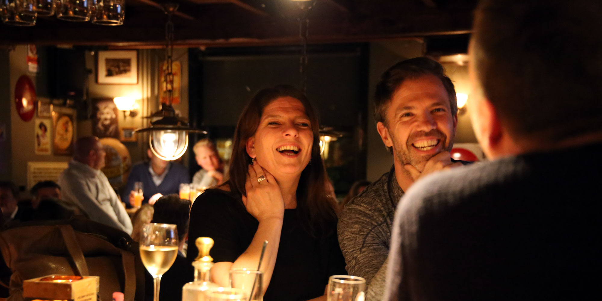
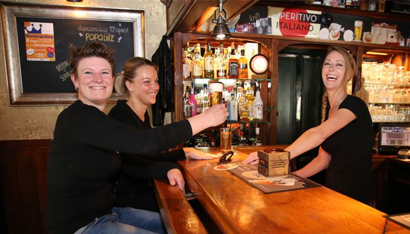
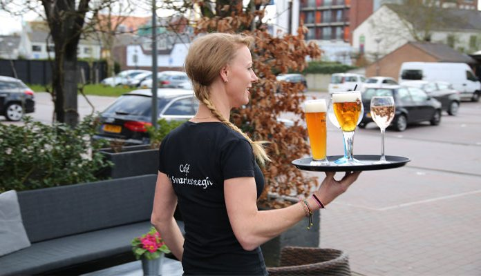
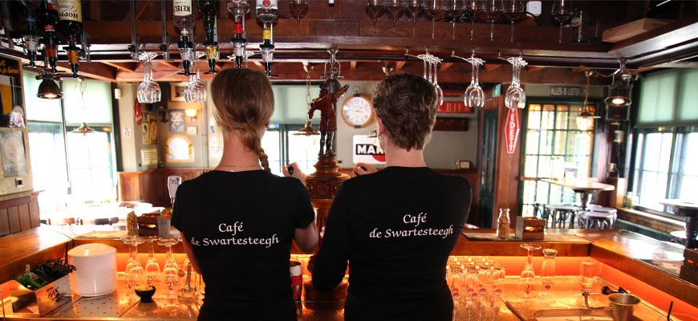
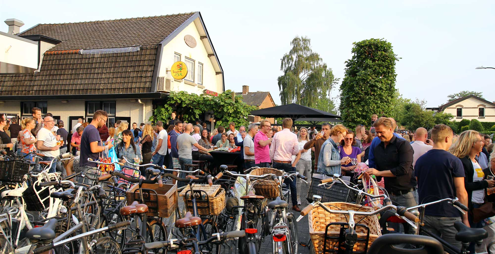
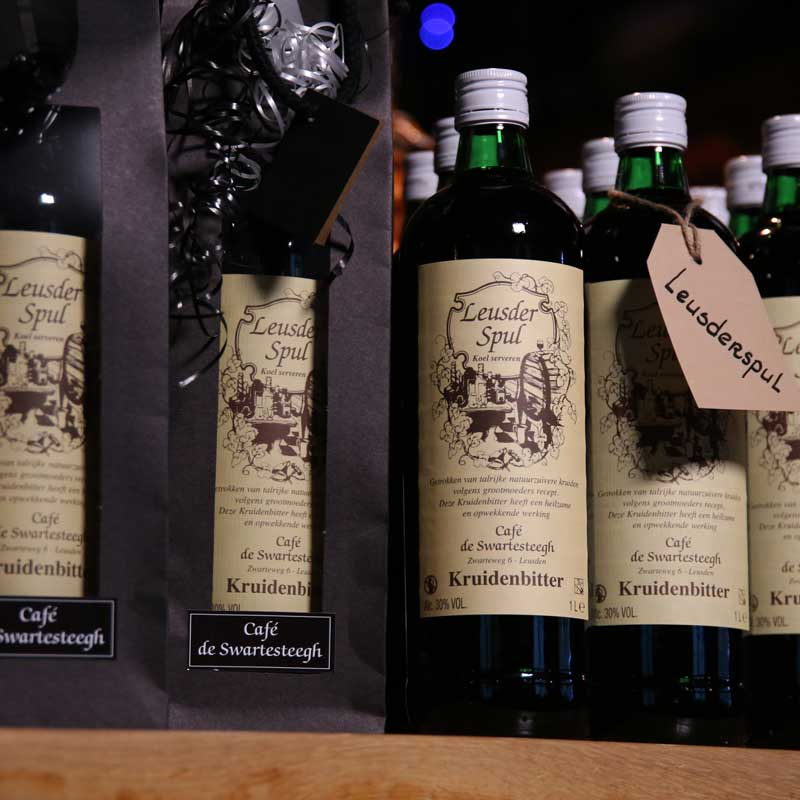
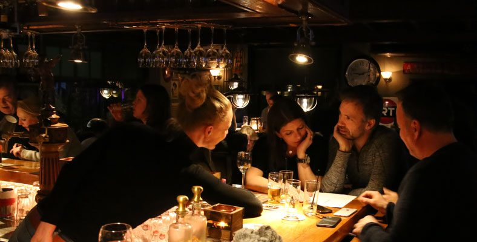
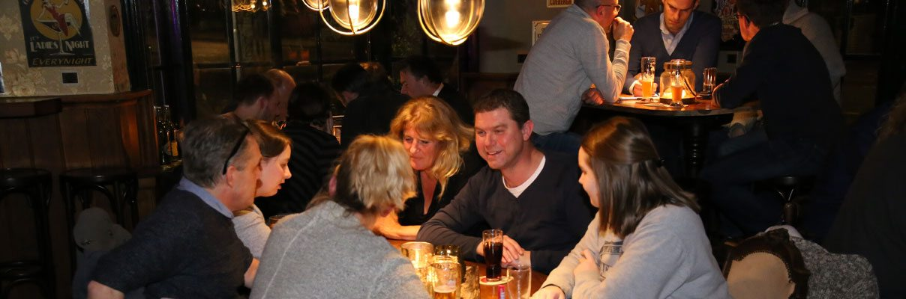
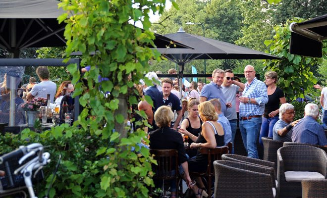
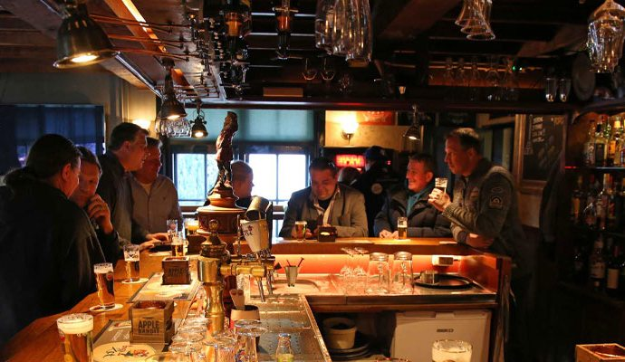

Puur café, bruine kroeg
Café de
Swartesteegh
Al meer dan 40 jaar een echte bruine kroeg in Leusden. Voor een borrel, een feestje of gewoon een drankje en een hapje, binnen of op het zonnige terras.
Zwarteweg 6, Leusden
Ongedwongen gezelligheid
Bij Café de Swartesteegh kun je heerlijk genieten van een drankje, hapje, bedrijfsborrel of feestje.
Samen met je vrienden of collega's de dag afsluiten of het weekend goed inluiden. Lekker met je lief even een drankje doen, binnen of op het zonnige terras. De Swartesteegh laat je elke dag genieten van ongedwongen gezelligheid en gastvrijheid onder het genot van een drankje en een hapje.
Maartje en Dennis




Voor elke borrel, feestje en meer
Iets te vieren? Wij helpen je graag om dit passend en geheel naar wens bij Café de Swartesteegh te organiseren.
- Bedrijfsborrel
- Verjaardag
- Afscheid van een collega
- Receptie
- Bruiloft
- Gewoon een spontaan feestje
De sfeervolle bruine kroeg en het zonnige, windvrije terras lenen zich bij uitstek voor alle vormen van gezellige en feestelijke bijeenkomsten. Wij zijn veel gewend en nemen alle 'organisatiezorgen' voor jou of jullie uit handen.
Alles is bespreekbaar en er is heel veel mogelijk. Wij nemen graag alle wensen met je door, en dikke kans dat wij ook een paar leuke suggesties hebben. Daag ons gerust uit!
De kaart
Keuken open tot 22.00 uur. Borrelkaart tot sluit.

Alleen verkrijgbaar bij Café de Swartesteegh
Leusder Spul
Getrokken van talrijke natuurzuivere kruiden volgens grootmoeders recept.
Deze kruidenbitter heeft een heilzame en opwekkende werking. Natuurlijk het lekkerst wanneer deze koud wordt geschonken. Om cadeau te geven of om heerlijk zelf van te genieten. Leuk om te geven, leuk om te krijgen!
- Per fles, zonder verpakking
- € 16,00
- Per fles, inclusief kadoverpakking
- € 18,50
Wij bezorgen alle bestellingen thuis of op de zaak.
Bestel Leusder SpulHoe het ooit begon
Café De Swartesteegh dankt haar naam aan de herberg de Swarte Steegh, die in 1667 naast het huidige café stond.
- 1667
Een herberg aan de Swarte Steegh
De Swarte Steegh wordt al vermeld als herberg, naast de plek van het huidige café.
- 1698
De gerechtsbanck
Er wordt gesproken over de 'gerechtsbanck aan den Swarte Steegh'.
- Tot de Franse Tijd
Rechthuis
De schoutenkamer deed vanaf de zeventiende eeuw dienst als Rechthuis voor Hamersveld, Asschat, Snorrenhoef en Donkelaar. Daar zetelde de notaris en vond rechtspraak plaats voor kleine vergrijpen. Vanwege die functie stond er een beeld van Vrouwe Justitia in de schouw van de schoutenkamer.
- Halte
De postkoets en Bacchus
Bij de hoeve annex herberg, tapperij en Rechthuis hield de postkoets van Amsterdam naar Arnhem halt. In de gelagkamer stond een borstbeeld van Bacchus, de god van de wijn, op de schouw.
- Het pand
Van bakkerij naar kroeg
Het pand van De Swartesteegh zelf was van oorsprong een bakkerij. De echte Hamersvelders weten nog wel dat Ab en Truus van Maanen de Steegh destijds begonnen zijn. Daarna heeft de Steegh diverse andere uitbaters gekend.
- Nu
Maartje en Dennis
Maartje en Dennis waagden de stap en gingen De Swartesteegh runnen. Met hun jarenlange horeca-ervaring en hart voor mensen kun je bij hen genieten van gastvrijheid en ongedwongen gezelligheid. Al meer dan 40 jaar is De Swartesteegh een begrip in Leusden.




Het laatste nieuws
Blijf op de hoogte van onze avonturen door onze pagina te liken.
Op Facebook
"Te leuke dag gehad!!! Snertrit 2026 was weer een enorm succes!!"
DJ Mink in het café
Zaterdag 17 oktober14 november19 december
Openingstijden
| Maandag | gesloten |
|---|---|
| Dinsdag | 14.00 tot 0.00 |
| Woensdag | 14.00 tot 0.00 |
| Donderdag | 14.00 tot 0.00 |
| Vrijdag | 14.00 tot 2.00 |
| Zaterdag | 14.00 tot 2.00 |
| Zondag | 14.00 tot 20.00 |
Keuken open tot 22.00 uur. Borrelkaart tot sluit.
Contact
Café de SwartesteeghZwarteweg 6
3833 AL Leusden
033 494 16 62
06 30 98 38 23 (Maartje)
info@swartesteegh.nl